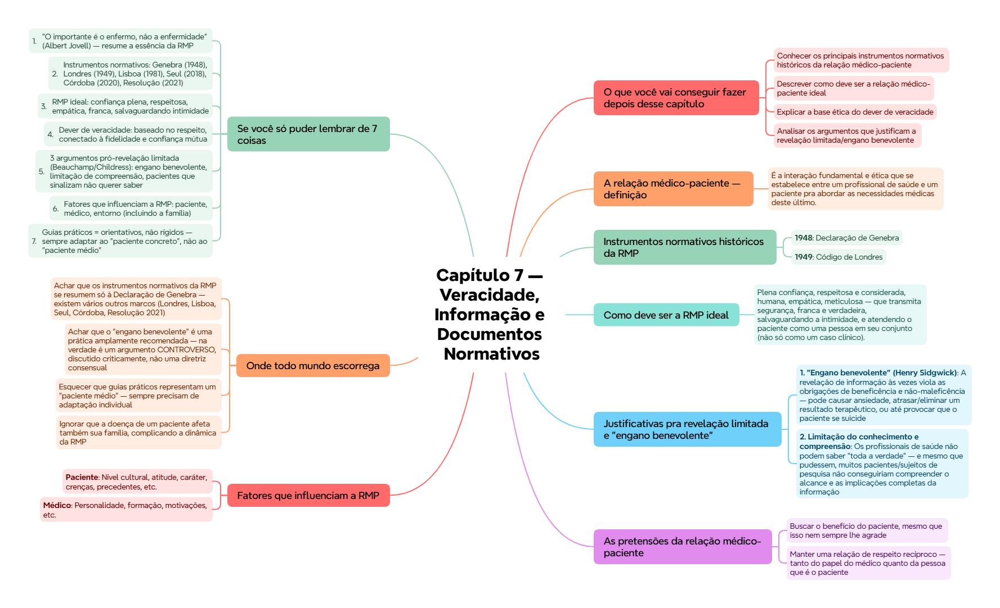

💬 Capítulo 7 — Veracidade, Informação e Documentos Normativos
ClinicusMed · Dossiê Clinicus — Padrão de Excelência
Nv. 1
0 XP
🎯 O que você vai conseguir fazer depois desse capítulo
Conhecer os principais instrumentos normativos históricos da relação médico-paciente
Descrever como deve ser a relação médico-paciente ideal
Explicar a base ética do dever de veracidade
Analisar os argumentos que justificam a revelação limitada/engano benevolente
Reconhecer os fatores que influenciam a relação médico-paciente
Entender a importância da personalização do tratamento frente aos guias práticos
💭 A frase que resume o capítulo
🟢 "O importante é o enfermo, não a enfermidade." (Albert Jovell) — a relação médico-paciente (RMP) coloca a PESSOA no centro, não apenas a doença.
🤝 A relação médico-paciente — definição
É a interação fundamental e ética que se estabelece entre um profissional de saúde e um paciente pra abordar as necessidades médicas deste último. É, e sempre foi, a pedra angular da prática médica — mas a capacidade, habilidade e arte do médico pra essa interação deve ser TREINADA, e contemplada nos planos de formação.
📜 Instrumentos normativos históricos da RMP
Ano
Instrumento
1948
Declaração de Genebra
1949
Código de Londres
1981
Declaração de Lisboa
2018
Declaração de Seul (sobre autonomia profissional e independência clínica)
2020
Declaração de Córdoba (sobre RMP)
2021
Resolução sobre a penalização da prática médica
📌 Esses instrumentos mostram como a comunidade médica internacional foi formalizando, ao longo de décadas, princípios éticos da relação médico-paciente — é uma linha do tempo cobrada com frequência.
✅ Como deve ser a RMP ideal
Plena confiança, respeitosa e considerada, humana, empática, meticulosa — que transmita segurança, franca e verdadeira, salvaguardando a intimidade, e atendendo o paciente como uma pessoa em seu conjunto (não só como um caso clínico).
🗣️ O dever de veracidade — fundamentação
🟢 Base ética: o dever de veracidade está baseado no respeito devido aos demais. A obrigação de veracidade tem conexão íntima com as obrigações de fidelidade e cumprimento de promessas — as relações de confiança entre pessoas são necessárias pra uma interação e cooperação frutífera. Essas relações se baseiam na confiança e na crença de que os outros sejam verazes.
🤫 Justificativas pra revelação limitada e "engano benevolente"
Beauchamp e Childress (mesmos autores do principialismo, já vistos no Cap. 1) discutem 3 argumentos que tentam justificar a revelação limitada de informação em contextos terapêuticos:
Argumento
Conteúdo
1. "Engano benevolente" (Henry Sidgwick)
A revelação de informação às vezes viola as obrigações de beneficência e não-maleficência — pode causar ansiedade, atrasar/eliminar um resultado terapêutico, ou até provocar que o paciente se suicide
2. Limitação do conhecimento e compreensão
Os profissionais de saúde não podem saber "toda a verdade" — e mesmo que pudessem, muitos pacientes/sujeitos de pesquisa não conseguiriam compreender o alcance e as implicações completas da informação
3. Pacientes que "não querem saber"
Alguns pacientes (especialmente muito doentes ou moribundos) não querem saber a verdade sobre seu estado, apesar de pesquisas afirmarem que "querem saber" — mostram por sinais (não só palavras) que na prática não desejam a informação completa
💭 Segundo o 3º argumento, nem a obrigação de fidelidade nem o respeito à autonomia exigiriam contar toda a verdade nesses casos — porque, na prática, os próprios pacientes sinalizariam que não a querem, mesmo dizendo o contrário verbalmente.
⚖️ Tensão central — veracidade x proteção do paciente
📌 Esse é o núcleo do debate ético dessa seção: existe uma tensão real entre o dever de contar a verdade (fundamentado no respeito e na autonomia) e o risco de que essa verdade cause dano psicológico ou prejudique o tratamento (fundamentado na beneficência/não-maleficência). Não há uma resposta simples — cada caso exige avaliação cuidadosa.
🎯 As pretensões da relação médico-paciente
Buscar o benefício do paciente, mesmo que isso nem sempre lhe agrade
Manter uma relação de respeito recíproco — tanto do papel do médico quanto da pessoa que é o paciente
Gerar confiança e liberdade, buscando o estilo mais adequado
Manter escuta ativa e comunicação bidirecional
Salvaguardar a privacidade
Cumprir um trabalho educativo e preventivo
Reconhecer o empoderamento do paciente, tomando decisões de forma compartilhada
Manter um trato humano, com visão holística do problema do paciente
🔀 Fatores que influenciam a RMP
Fator
Elementos
Paciente
Nível cultural, atitude, caráter, crenças, precedentes, etc.
Médico
Personalidade, formação, motivações, etc.
Entorno
Tempo e meios disponíveis, diretrizes/políticas, familiares, crescente multidisciplinaridade dos processos
🏥 Ponto importante: quando um paciente adoece, em certa medida a FAMÍLIA também "adoece" — complicando ainda mais essa relação. É preciso considerar o entorno familiar como parte do contexto da RMP.
📋 Guias práticos x personalização do tratamento
🟢 Ponto-chave: os guias práticos NÃO devem dificultar a "personalização do tratamento". Devem ser considerados ferramentas ORIENTATIVAS baseadas em evidência e opiniões de especialistas multidisciplinares — mas se referem a um "paciente médio", por isso devem admitir variações pra melhor adaptação ao paciente concreto (seu estado de saúde, grau de dependência, necessidades, tratamentos concomitantes, hábitos, gostos, expectativas).
✅ O que você deve lembrar
RMP = pedra angular da prática médica, deve ser TREINADA. Frase de Jovell: "o importante é o enfermo, não a enfermidade". 3 argumentos pró-revelação limitada: engano benevolente, limitação de compreensão, pacientes que sinalizam não querer saber.
⚠️ Erro comum
Achar que o dever de veracidade é absoluto e sem exceções — Beauchamp e Childress discutem justificativas reais (mesmo que controversas) pra revelação limitada em certos contextos terapêuticos específicos.
⚡ Questão rápida
Por que os guias práticos baseados em evidência não devem ser aplicados de forma rígida a todo paciente?
Porque os guias práticos se referem a um "paciente médio" — uma representação estatística baseada em evidência e opinião de especialistas, mas que não captura as particularidades de cada pessoa real. Cada paciente tem seu próprio estado de saúde, grau de dependência, tratamentos concomitantes, hábitos, gostos e expectativas — por isso os guias devem servir como ferramentas ORIENTATIVAS, admitindo variações para melhor adaptação ao caso concreto, e não como regras rígidas aplicadas mecanicamente.
🧠 Autoexplicação
Por que faz sentido que a obrigação de veracidade esteja intimamente conectada à obrigação de fidelidade e manutenção de promessas, e não seja apenas uma regra isolada sobre "não mentir"?
A veracidade não é apenas uma regra abstrata contra a mentira — ela é o FUNDAMENTO PRÁTICO que torna possível qualquer relação de confiança genuína entre pessoas. Quando um médico promete cuidar de um paciente, ou quando um paciente confia informações íntimas sobre sua saúde ao médico, essa troca só funciona porque ambas as partes presumem que a outra está sendo sincera. Se a veracidade fosse opcional ou constantemente questionável, todas as outras obrigações da relação médico-paciente — fidelidade ao compromisso assumido, cumprimento de promessas terapêuticas, respeito à autonomia do paciente (que depende de informação verdadeira para decidir) — desmoronariam, porque não haveria base de confiança sobre a qual construí-las. É por isso que a veracidade não é um princípio isolado, mas sim o alicerce que sustenta toda a arquitetura de confiança necessária para uma "interação e cooperação frutífera" entre médico e paciente.
⚠️ Onde todo mundo escorrega
Achar que os instrumentos normativos da RMP se resumem só à Declaração de Genebra — existem vários outros marcos (Londres, Lisboa, Seul, Córdoba, Resolução 2021)
Achar que o "engano benevolente" é uma prática amplamente recomendada — na verdade é um argumento CONTROVERSO, discutido criticamente, não uma diretriz consensual
Esquecer que guias práticos representam um "paciente médio" — sempre precisam de adaptação individual
Ignorar que a doença de um paciente afeta também sua família, complicando a dinâmica da RMP
Confundir os 3 diferentes argumentos que justificam revelação limitada — cada um tem uma lógica distinta (dano potencial, limitação de compreensão, sinais de recusa do próprio paciente)
📚 Se você só puder lembrar de 7 coisas
"O importante é o enfermo, não a enfermidade" (Albert Jovell) — resume a essência da RMP
Dever de veracidade: baseado no respeito, conectado à fidelidade e confiança mútua
3 argumentos pró-revelação limitada (Beauchamp/Childress): engano benevolente, limitação de compreensão, pacientes que sinalizam não querer saber
Fatores que influenciam a RMP: paciente, médico, entorno (incluindo a família)
Guias práticos = orientativos, não rígidos — sempre adaptar ao "paciente concreto", não ao "paciente médio"
🩺 Caso Clínico Progressivo — Paciente Terminal e o Dilema da Verdade
Vamos acompanhar Dona Zulmira, 82 anos, com câncer avançado, cuja família pede ao médico que não conte o diagnóstico completo. O caso evolui em 3 níveis — clica em cada um pra ver como as coisas vão se desenrolando.
🧠 Mapa Mental — Veracidade, Informação e Documentos Normativos
Visão geral do capítulo em formato visual — ideal pra revisão rápida antes da prova. O conteúdo completo, com explicações e exemplos, está no Guia de Estudo.

🃏 Flashcards — SM-2 real + interface Anki
O sistema guarda, no seu navegador, quais cards você já sabe bem e quais precisam voltar mais cedo — cada vez que você avalia um card, ele recalcula quando ele deve voltar.
Cartão 1 / 0Dominados: 0
PERGUNTA
RESPOSTA
✅ Banco de Questões Comentadas
10 questões, do mais básico ao mais puxado. Escolhe uma alternativa, depois clica em "Ver comentário completo" — vale a pena ler até quando você acerta, porque o comentário explica cada alternativa, não só a certa.